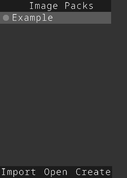
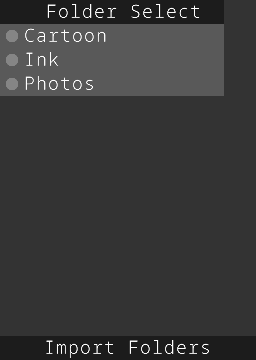
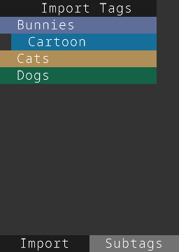
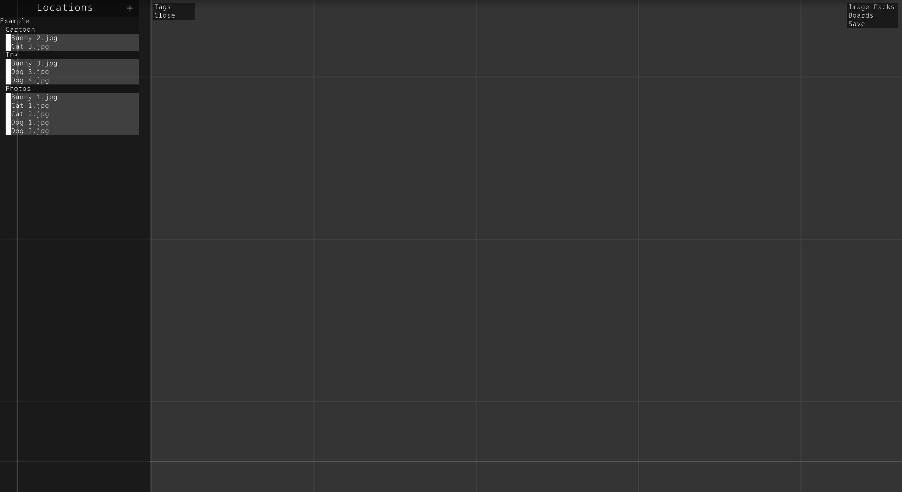
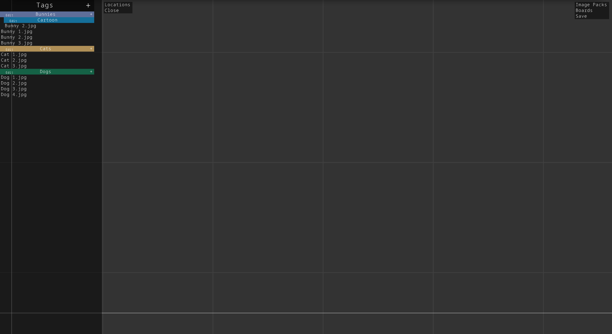

Image packs allow users to share tag lists with other users. Image packs are stored in the "shared" folder. Click on the "Image Packs" button in the top right corner to bring up the window.
Image packs will be displayed in a list. The selected image pack will have a white dot on the left side of the name. Clicking import, the window will move to the next view.
In this view, all the folders of the image pack are listed. Only selected folders (ones with the white dot) will be imported. Clicking on "Import Folders" will move to the final step.
A list of all the tags and sub tags that will be imported are displayed. Clicking the subtags button will disable importing subtags from the pack but it will still import all the image associated with the tag. If everything looks good, click import to import all the tags.
To create an image pack, create a folder in the "shared" folder of RIA and give it the name of your image pack. Add subfolders to the image pack to categorize the images you want to used and move your images into the folders. Multiple levels of subfolders can be used.
Import that folder into the locations menu and start tagging the images. Tagged images will have a white indicator square.
Once all the images are tagged, go back to the import window and click "Create".
That's it. There should now be an "import.dat" file in your image pack.
NOTE: When sharing, other users need both the import.dat file and the images. Images are not stored in import.dat.